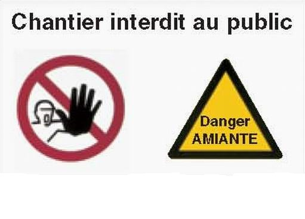
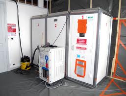
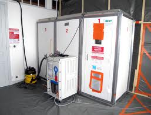
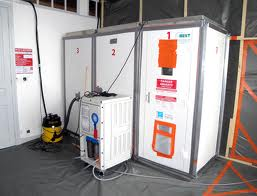

 

>Examen visuel en 2 étapes avant réception d'un chatiner de désamiantage
Nous vous proposons à l'issue de chacun de vos chantiers, un examen visuel selon la norme NF X 46-021
Un élément clef du processus de réception d'un chantier de retrait de Matériaux et Produits Contenant de l'Amiante (MPCA) répondant au code de la santé publique.